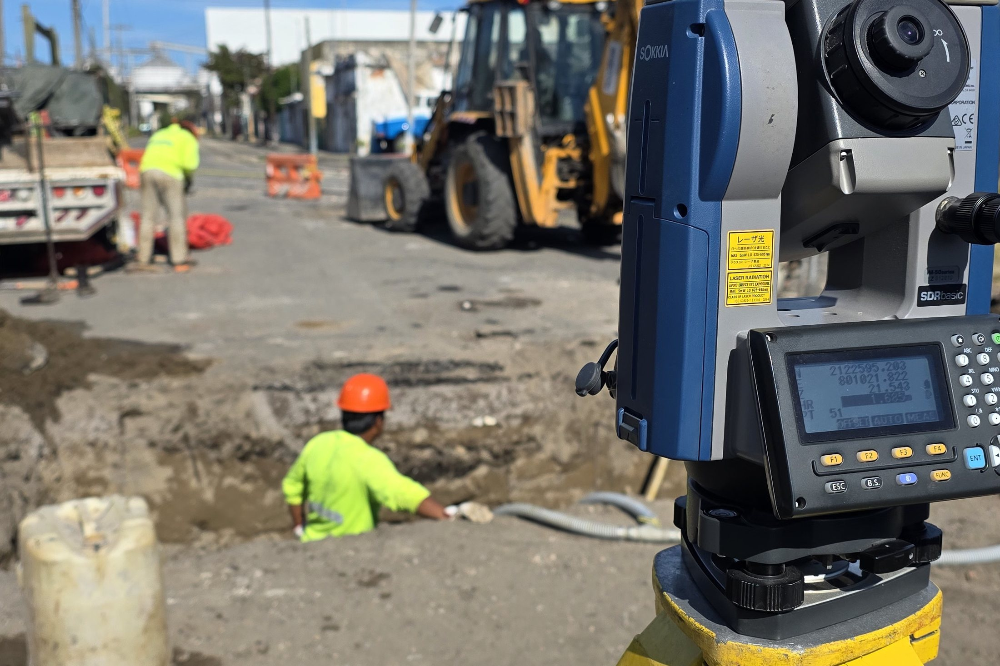
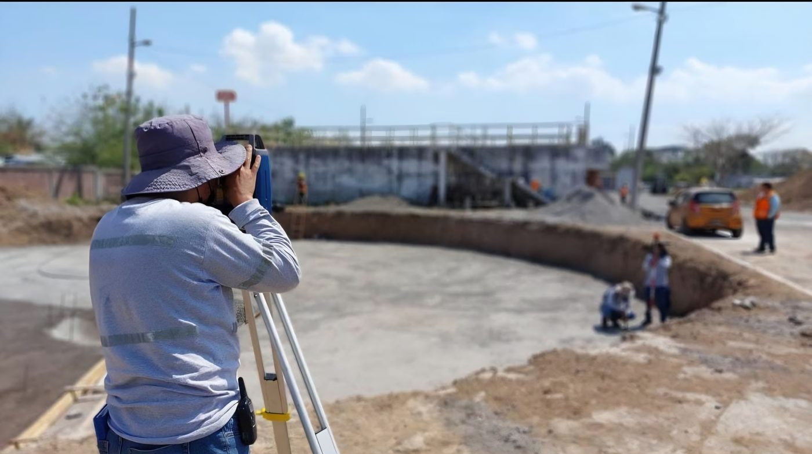
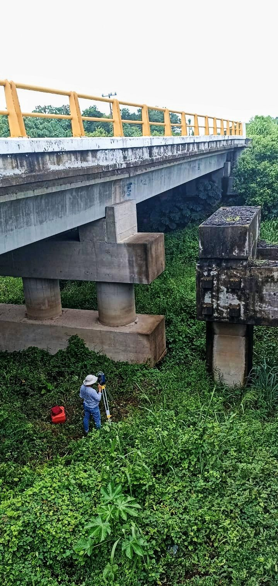
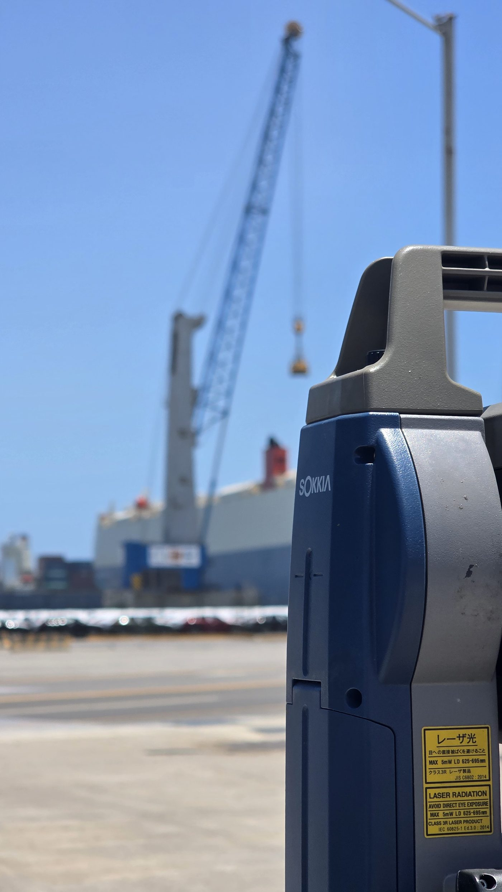
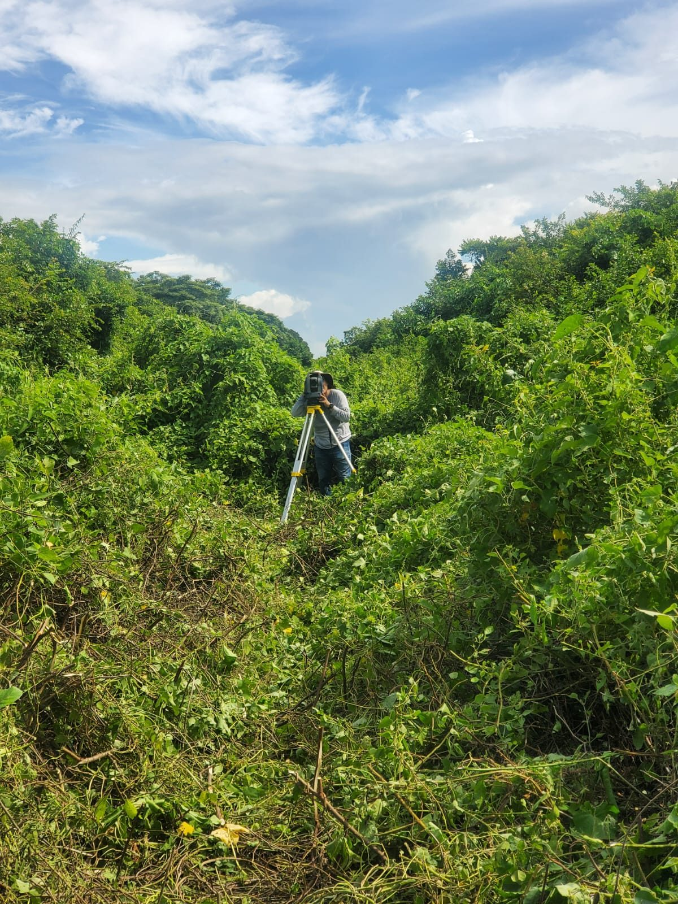
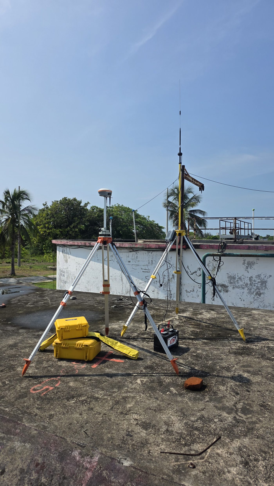
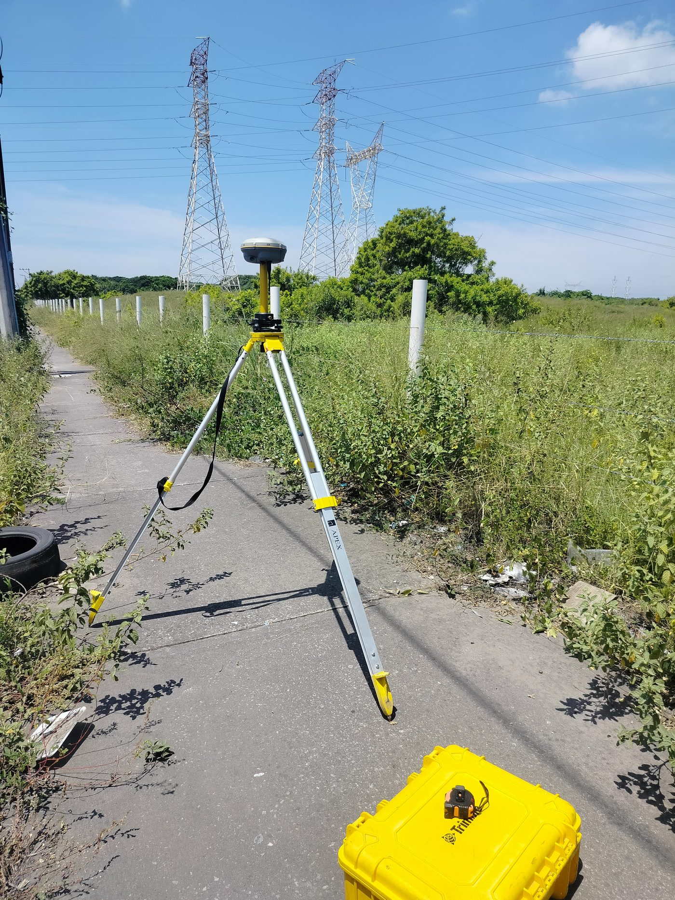
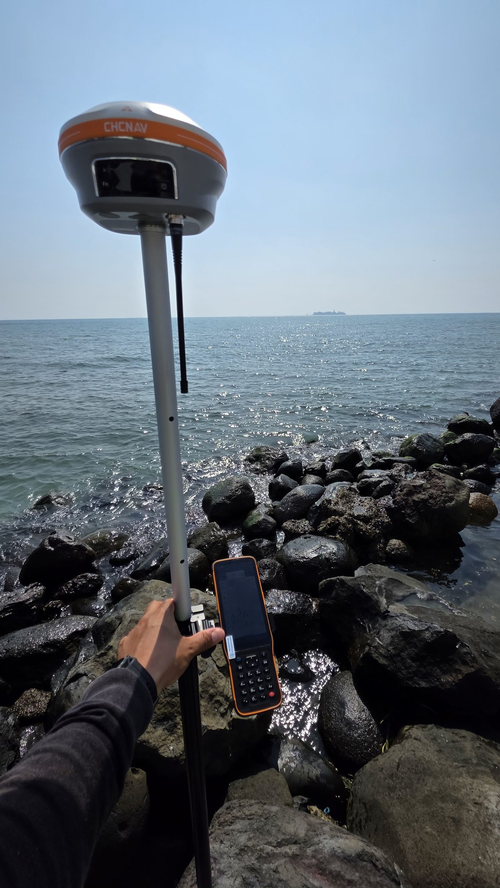
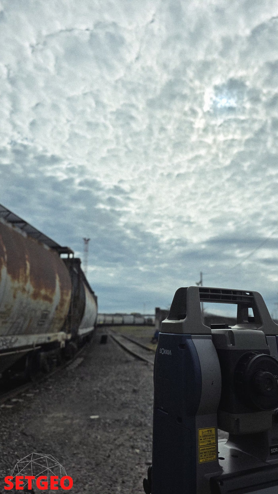

Servicios Especializados en Topografía y Geomática
Levantamientos topográficos, control geodésico y modelos digitales del terreno en Veracruz — con equipo GNSS ligado a la Red Geodésica Nacional Activa de INEGI y estación total de precisión.
¿Cómo te ayudamos?
Levantamos y modelamos tu terreno con equipo GNSS y estación total de precisión, en campo.
Minimizamos errores costosos en obra y planeación con datos confiables desde el primer trazo.
Recibes información topográfica clara y confiable, lista para tus trámites y proyectos.
Servicio 01
Estación total y GNSS en campo, con la precisión que exige cada proyecto de ingeniería, catastro o construcción.








Servicio 02